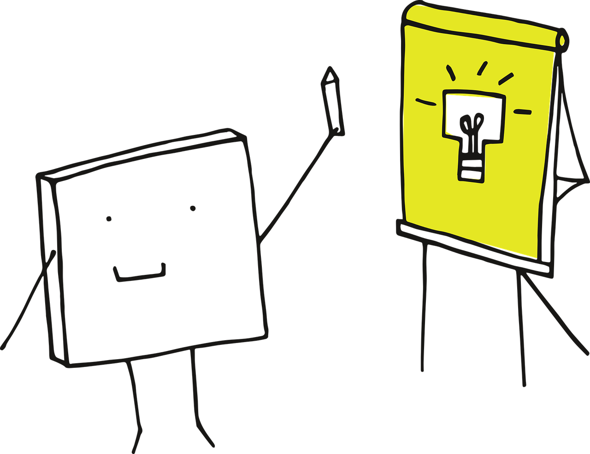

Muitas pessoas costumam associar o hábito de aprender, apenas em ambientes escolares e acadêmicos. Sem dúvidas esses ambientes são justamente propícios ao ensino e aprendizado, entretanto, não se deve apenas depender deles para o aprendizado.
O ser humano, desde os primórdios vem evoluído constantemente, desde as cavernas até a era digital. É nítido que é um grande salto, imagine a quantidade de aprendizado foi adquirido para que todos nós tivéssemos aqui hoje. Esse é justamente o ponto, o aprendizado e algo contínuo, ele nos rodeia tempo inteiro, a todo momento estamos descobrindo coisas novas e deixando para trás outras. Isso que faz sermos que somos.
Em um sentido mais amplo, o conhecimento significa autoaprimoramento, enquanto a ignorância indica estagnação. O hábito de aprender conduz à paz, ao progresso e à prosperidade, em contra ponto que a ignorância leva à miséria, ao infortúnio e ao empobrecimento.
O aprendizado continuo traz consigo uma série de benefícios, desde o ser estar mais apto a passar por diversos cenários e situações, como a longo prazo para manutenção da mente.
Hoje o aprendizado está muito mais dinâmico do que a 20 anos atrás, hoje é possível estar a par de diversos assuntos a qualquer momento do dia, graças ao avanço tecnológico advindo das últimas décadas, os livros foram substituídos por ebooks, e as folhas de papel por páginas web. Todo esse avanço resultou em um aprendizado muito mais difundido e acessível.
O hábito de aprender deve ser algo constante na vida de todos, como uma obrigação, procrastinar ou se abster de aprender algo novo é um erro grave, pois assim, o ser se conforma com a mediocridade. E como tudo no mundo com o passar do tempo evolui e se transforma, aprendizados devem ser sempre atualizados para novos.